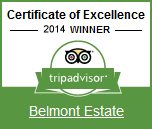

Belmont Estate, Grenada: from plantation to an agritourism business

Background
Established in the 1600’s as a plantation, Belmont Estate has come to symbolise Grenada’s potential as a model for sustainable agritourism. Throughout its history and successive ownerships, Belmont Estate has always been involved in agriculture, initially producing sugarcane and coffee as its primary crops, and after the decline of the sugar industry, the introduction of cocoa, nutmegs and bananas. In 1944 the Norbert and Lyris Nyack purchased the property, one of six estates that they owned. The estate, located in the rural north, is an hour’s drive from Grenada’s capital, St Georges.
Through the extensive efforts of Shadel Nyack Compton, the granddaughter of the Nyacks, Belmont Estate was diversified into agri-tourism in 2002. With focus on sustainable farming and tourism, environmental and social stewardship, the company has been certified organic since 2003, and Fair Trade since 2014. A collaboration with the Grenada Chocolate factory in 2003 resulted in the first-ever chocolate production in Grenada, with Belmont Estate supplying the organic cocoa beans for the organic chocolate production. A goat dairy has also been established on the premises of the estate, that has led to increased revenue generation and dairy farm production.
Agritourism is the core of Belmont Estate’s business model and its greatest attraction. The Estate’s transition from an economic model solely relying on agriculture to a more dynamic one centred around experiential, hands-on, non-conventional, yet authentic tourism activities has involved numerous phases.
Driven by an initial vision and supported with strong leadership, partnerships, sound investment and enterprising innovation, the survival of the Estate has been up-scaled into a business model that can address critical challenges and capitalise on new market opportunities.
“The top five (5) most important activities in executing Belmont’s value proposition are the organic farm, the organic value added products, the restaurant offering authentic traditional cuisine, exceptional service offered at a good value, and an authentic farm experience offered through the various tours.”
Rhiney, K. 2015. Study on Agribusiness Development – Strengthening Agritourism potential in the Caribbean. CTA and IICA
-

- Traditional Performers © CTA
- © Belmont Estate
- Traditional Performers © CTA
Agritourism: a potential lifeline for agribusiness
Declining agricultural production, led current owner and Managing Director, Shadel Nyack Compton, grand-niece of Norbert and Lyris Nyack, to rethink the business strategy for the estate, and resuscitate the floundering estate to economic vibrancy.
This involved diversifying the Estate’s activities from exclusively relying on farming to developing new, sustainable and resilient sources of revenue that would take advantage of the unique value proposition of the Estate. These included, for example, the Estate’s unique history and heritage, exceptionally beautiful setting in “lush rolling hills”, iand the well preserved “old plantation charm.”
Tourism was identified as a new and lucrative opportunity for Belmont Estate, so in 2002, management opened Belmont Estate to visitors. A number of agritourism activities are provided at the Estate, such as guided tours of the plantation, fruit orchards, and cocoa and spice fields, (educational and tourism), viewing or interaction with farm and other animals (e.g. goats, tortoises, monkeys), and a heritage museum. Additionally, Belmont Estate now also accommodates weddings and events, and offers internships. It has developed partnerships with various local tour companies, and is featured widely in tourism and hotel brochures for Grenada.
After the establishment of the Agri-Tourism business in 2003, successive hurricanes in 2004 and 2005, devastated the estate’s infrastructure and fields, resulting in closure of the tourism component of the business until 2007. Crops were destroyed or severely damaged, and production decreased by about 80 per cent overall. The business required serious commitment, resources and direction to recover from the physical and financial losses, but has repositioned and strengthened itself in the marketplace, being recognized as the premiere agri-toursim experience in Grenada.
Linking cuisine, agriculture and tourism
An important component of the agritourism experience provided by Belmont Estate is its Grenadian creole restaurant, which seats 250 diners. By providing an exquisite dining environment based on local cuisine and food heritage, the restaurant provides a direct link between farming and tourism activities of the Estate. Food related initiatives have proved critical to building demand among tourists for the products that are grown on the Estate. It is also a way of promoting quality, sustainability and high standards in the agricultural production both on the Estate, and also that of local farmers and suppliers. All chefs and cooks are from the local community, and are trained and experienced, in using the local produce, herbs and spices to create local and gourmet dishes. The main buffet lunch is presented on coal pots, in keeping with Grenadian cooking tradition. Grenada, being known as the “Isle of Spice” is known for its flavourful cuisine, based on the generous seasonings and cooking with herbs and spices, and Belmont Estate is especially known for delectable flavours. Spices like nutmegs, cinnamon, bay leaves and cloves and herbs are grown on the estate for the local and export market, and are abundantly used in the restaurant, and processed for sale as value added products.
There are also unique culinary experiences based on festivals or special events. As a result of Belmont Estate’s Indian heritage – owned by East Indian descendants, and being involved in the employment of East Indian Indentured servants – Belmont Estate is active in the promotion of East Indian heritage. Annually, on Indian Arrival Day, the estate hosts an extravagant event offering authentic Indian cuisine and Indian cultural entertainment. In addition, there is a special chocolate and cocoa themed meal as part of the annual Grenada Chocolate Festival. As a part of the Tree to Bar Chocolate tour, chocolate themed meals are also offered. In addition, similarly, a meal offering various presentation of Goat’s cheese or milk is offered as a part of the Goat Dairy Tour.
Aside from the restaurant experience, Belmont Estate also offers a more “down to earth” food experience. For those that want to experience real traditional cooking of our local foods, Belmont Estate allows visitors to get involved in the cooking of traditional foods like “Oil Down” out doors. Fresh produce is harvested and used immediately, in the field, where a fireside would be set up using stones and wood from the fields. Food is served in a calabash ( a wooden gourd from the calabash tree traditionally used as a bowl ) or on banana leaves, and guests are encouraged to use their hands for eating, to savour a real local experience.
The Grenada Chocolate Company
Founded in 1999 by David Friedman (also known as Mott Green), the Grenada Chocolate Company produces high quality, dark varietal chocolate in Grenada using fresh, local Trinitario cocoa beans, handled with care by workers within a safe environment. In 2004, Grenada Chocolate Company gained Organic certification (USDA Organic) and created a facility using solar energy, nestled in lush tropical cacao groves in Grenada's pristine rainforest. The entire small-batch process of making the chocolate is controlled allowing specialized attention to the creation of dark chocolate with the finest, most complex and rich flavour possible. The dream was to create value-added activities for farmers, the community and the nation. Farmer cooperatives were formed and farmers also became part owners of the company. In 2011, the company received recognition from the US State Department for its “contribution to the sustainable growth of rural economies by establishing Grenadian products in international markets; pioneering agrotourism; outstanding environmental conservation efforts; and promotion of organic farming.” Despite serious setbacks as the result of Hurricane Ivan the Grenada Chocolate Company managed to get itself back on the ground. In 2008, 2011 and 2013, the Grenada Chocolate Company was awarded silver medals from the Academy of Chocolate in London for its dark chocolate bars.Mr. Green dealt directly with small growers and kept the processing and packaging of chocolate within Grenada. In the process, he became the first to create a chocolate-making company in Grenada.The Grenada Chocolate Company operates the Bon Bon Chocolate Shop at Belmont Estate. It sells chocolate products flavoured with spices, fruits and nuts. Belmont Estate is the largest suppler of beans to the Grenada Chocolate Factory. The Chocolate is sold domestically and on the international market.
Source: CTA Report “Agribusiness Forum: enhancing regional trade and adding value to Caribbean agrifood products, Grenada, 16-18 November 2014”
- Grenada Chocolate Company © CTA
- Grenada Chocolate Company © CTA
-

- Shadel Nyack Compton (left) at Belmont Estate, Grenada © CTA
The Belmont Estate Goat Dairy
The Goat Dairy was started by a non- profit, the Grenada Goat Dairy, as a post-Hurricane Ivan initiative, geared towards helping farmers in acquiring an income through providing high quality goat’s milk. The project was funded by the non-profit, and the operation was based at Belmont Estate. The project was planned to assist farmers in developing a livelihood for themselves, and to provide fresh, high quality milk for the cheese production at Belmont Estate. In addition to supporting local economic development and job creation, it also provides local markets with healthy and nutritious goat-milk products. Due to its high quality standards, it negates the need for the estate to import processed goat dairy products. Of the items produced from the goat dairy, the chèvre, soft goat cheese, is one of the favored products currently being utilized in local restaurants by expert chefs and sold at local retail supermarkets. While there is regional demand, the production has been too small to meet the overseas demand.In 2015, the Grenada Goat Dairy, turned over the ownership and operations of the Goat Dairy to Belmont Estate, and continues to operate in an advisory role to the Estate, and as a trainer, facilitator to resource provider to local farmers.
Source: Rhiney, K. 2015. Study on Agribusiness Development – Strengthening Agritourism potential in the Caribbean. CTA and IICA & Shadel Nyack Compton
Resilience, sustainability and profit through organic, fair trade and ecology
Sustainability was at the core of the transition process and the vision of the Nyack family for the future development of the Estate. Sustainability was also a critical component in relation to being compatible with farming within a natural and social environment as much as it was a means to enter a new and fast growing niche market for certified agricultural products and ecotourism.
Organic and fair trade production which Belmont Estate has achieved has come through substantial investments, with international certification through CERES and FairTSA. International certification has since opened the way for Belmont Estate to reach important export markets for its agricultural products, particularly nutmeg, spices and cocoa and soursop. It offers the buy and end consumer the confidence that they are consuming healthy, safe, nutritious food that is traceable to its source. The healthy benefits of organic is integral component of the core values of Belmont Estate commitment to people.
This strategic choice for sustainable production has also proven to be a positive response to the challenges faced by the Estate as a result of climate change and natural disasters. For example, despite incurring widespread destruction on the Estate as a result of Hurricane Ivan in 2004, cocoa yields are now up 140 % on pre Ivan levels. The strategy has paid off, as Belmont Estate has won several awards for environmental stewardship and Product Excellence including the 2015- Awarded for Excellence in Ecotourism, 27th Annual Business Awards Ceremony, Grenada Chamber of Industry and Commerce, 2014- Awarded in Recognition of Unique Agro-Heritage Attraction at State of the Industry Conference, U.S. Virgin Islands from Caribbean Tourism Organization and Travel Mole and 2010- Awarded for Environmental Excellence of the Year by the Grenada Chamber of Industry and Commerce.